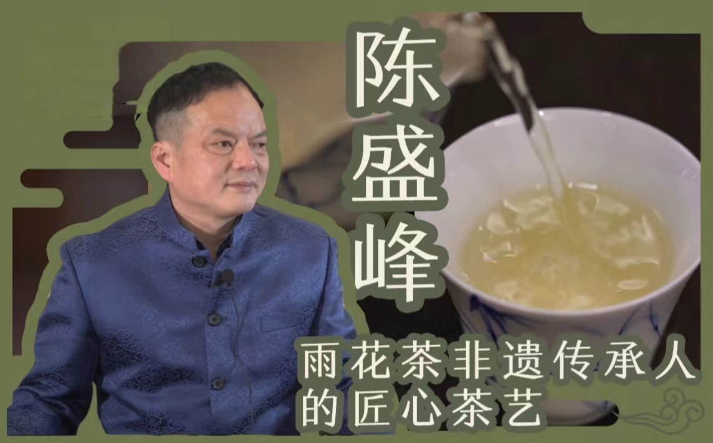
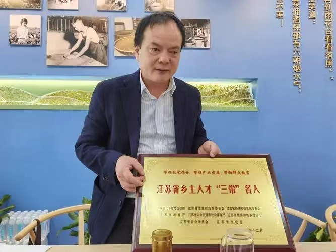

陈盛峰
1971年出生的陈盛峰是南京雨花茶制作技艺的第五代传承人，也是南京雨花茶申请非遗之路最有力的推动人。1994年，从江苏省农林职业技术学院毕业后分配到中山陵茶厂后，他开始学习雨花茶的制作技艺。从一开始的茫茫不知所以然，到一步步学习制作雨花茶，再到边当雨花茶工匠，边学习南京的茶文化，对雨花茶的这份挚爱已经融入到陈盛峰的肌肉骨髓。

弘扬非遗雨花茶文化
陈盛峰表示，雨花茶申请非遗有着强大的文化优势。这既是和南京这座城市悠久的茶文化有关，也和雨花茶的南京城市属性紧密相连。2006年陈盛峰首次从报纸上看到龙井茶非遗的报道后，就开启了雨花茶的非遗之路：2010年雨花茶制作技艺成为玄武区区级非遗项目、2013年成为市级非遗项目、2015年成为省级非遗项目、2020年成为国家级非遗项目，到现在成功申请成为联合国非遗项目……陈盛峰说，自己内心一直有着一份坚信。这份坚信源自对南京这座城市茶文化的了解，12年一步步地实现，自己心中的这份坚定从未改变。